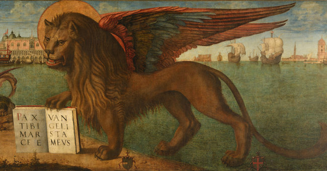
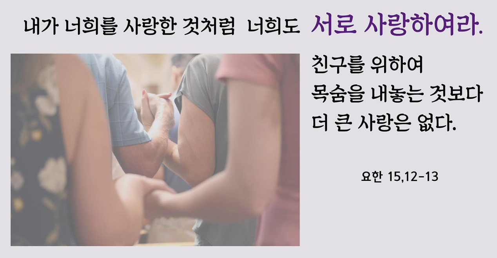

그룹공부의 과정
그룹공부 주제는 구약의 창세기에서 시작하여, 탈출기, 신약의 마르코, 요한으로 단계적으로 이어집니다. 이 단계를 통하여 하느님 말씀을 듣고 귀를 여는 방법을 배우게 됩니다.
구약의 핵심인 오경에서, 이스라엘 백성의 신앙 고백과 원체험이 담겨져 있는 창세기와 탈출기,
또 예수님의 말씀과 행적이 담겨져 있는 신약의 두 복음서를 통해서 우리는 하느님과 예수님의 말씀을 듣는 귀를 여는 방법을 배웁니다.
청년들이 함께 성서 공부를 하는 소그룹 모임입니다.
청년성서모임은 ‘그룹공부’를 기본으로 합니다.
그룹공부란, 그룹원이 말씀의 봉사자와 함께 모여
성서를 읽고 묵상하고 성서에 대한 지식은 물론 각자의 묵상을 서로 나눔하는 과정을 말합니다.
성서를 지식적으로 공부하는 것만이 아니라,
성서를 읽고 그것을 각자의 삶과 관련지어 생각하고 묵상해보는 것이 중요합니다.
그룹공부를 마치면 일정기간의 연수 프로그램에 참여합니다.
연수를 통해 성서 공부를 보충하고 말씀을 생활화합니다. 연수는 그룹공부의 완성이라 할 수 있으며
연수 안의 프로그램을 통해 하느님의 무한한 사랑을 느낄 수 있는 시간이 될 것입니다.
그래서 한 명의 강사가 여러 명을 대상으로 강의하는 방식이 아닌,
앞서 공부를 마치고 연수를 다녀온 선배 봉사자가 그룹을 이끄는 방식으로 진행됩니다.
그룹공부 주제는 구약의 창세기에서 시작하여, 탈출기, 신약의 마르코, 요한으로 단계적으로 이어집니다. 이 단계를 통하여 하느님 말씀을 듣고 귀를 여는 방법을 배우게 됩니다.
구약의 핵심인 오경에서, 이스라엘 백성의 신앙 고백과 원체험이 담겨져 있는 창세기와 탈출기,
또 예수님의 말씀과 행적이 담겨져 있는 신약의 두 복음서를 통해서 우리는 하느님과 예수님의 말씀을 듣는 귀를 여는 방법을 배웁니다.
창조의 하느님과 성조들의 삶 안에 고백하고 있는 신앙을 통해서 우리 자신의 신앙을 되새겨 보며 하느님의 인간에 대한 깊은 사랑을 느끼게 됩니다.
이스라엘 백성의 고통과 울부짖음을 외면하지 않으시고, 언제나 함께 하시며, 백성을 구원하시고 돌보시는 이스라엘 백성의 하느님을 탈출기를 통해 함께 체험하고 나누게 됩니다.

첫 복음서이며 가장 간결한 마르코 복음에서 예수 그리스도의 말씀과 행적 그리고 부활을 통해서 하느님 나라를 만나며, 우리 곁에 오신 예수님을 닮아가고자 합니다.

마태오, 마르코, 루카의 공관복음과는 구분되는 복음서로 창세기, 탈출기, 마르코 공부를 통해 쌓아온 묵상들을 정리하고 심화시켜, 예수 그리스도에 의해 완성되는 그리스도교 신앙의 핵심을 찾아가고자 합니다.
1주일에 한번 약 1-2시간 정도 함께 성서를 읽고 공부하며 기도하고 나눔을 진행합니다.
그룹원들과 나눈 것을 토대로 다음 일주일간 그 말씀대로 살고자 하는 노력을 합니다.
모임 전에 각자 교재의 순서에 따라 정해진 범위의 성경을 읽고, 질문에 답해보며 예습을 합니다.
그다음 함께 모여 성서를 읽고 기도하며, 순서에 따라 성서 내용을 되짚어 본 뒤 나눔을 진행합니다.
각 과에 해당하는 성서 본문을 소리내어 읽습니다.
성서를 읽기 전에 성서를 통해 하느님의 말씀을 전해 들을 수 있도록 기도를 드립니다.
말씀 새기기는 성서 본문을 바탕으로 답을 적습니다. 그러나 단답식에 그치기보다는 그에 덧붙여 생각나는 내용을 함께 쓰는것이 좋습니다.
그룹 봉사자의 해설에 따라 말씀의 뜻과 배경을 알아갑니다.
말씀 새기기는 성서 본문을 바탕으로 답을 적습니다. 그러나 단답식에 그치기보다는 그에 덧붙여 생각나는 내용을 함께 쓰는것이 좋습니다.
그룹 봉사자의 해설에 따라 말씀의 뜻과 배경을 알아갑니다.
말씀 새기기는 성서 본문을 바탕으로 답을 적습니다. 그러나 단답식에 그치기보다는 그에 덧붙여 생각나는 내용을 함께 쓰는것이 좋습니다.
그룹 봉사자의 해설에 따라 말씀의 뜻과 배경을 알아갑니다.
성서를 통해 내 삶 안에서 드러나시는 하느님을 나누어봅니다. 함께한 사람들과 나눈 내용을 토대로 앞으로의 삶 안에서 '말씀'을 생활화합니다.
Augue consectetur sed interdum imperdiet et ipsum. Mauris lorem tincidunt nullam amet leo Aenean ligula consequat consequat.
Aliquam ut ex ut augue consectetur interdum endrerit imperdiet amet eleifend fringilla.